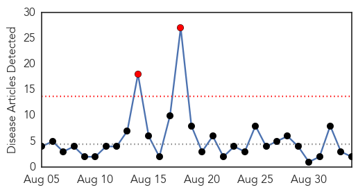
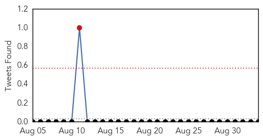
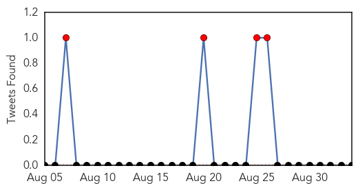
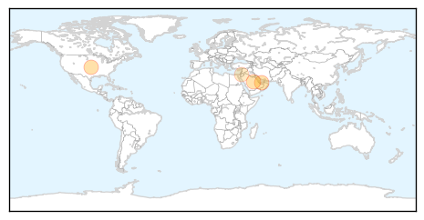

Meningitis
30-Day Web Trend
2 alerts, 0 warnings

30-Day Twitter Trend
0 alerts, 0 warnings

Article Locations

Article Confidences

Top Articles:
Top Tweets:
-
No tweets found for Sep 03, 2015
MERS
30-Day Web Trend
0 alerts, 0 warnings

30-Day Twitter Trend
15 alerts, 3 warnings

Article Locations
Article Confidences

Top Articles:
- 0.998
- Mundipharma Presents Research on Efficacy of BETADINE(R) Formulations Against MERS at Inaugural International Meeting on Respiratory Pathogens (IMRP)
- 0.998
- WHO statement on the tenth meeting of the IHR Emergency Committee regarding MERS
- 0.958
- SR500,000 payout for each MERS death
- 0.695
- WHO statement on the tenth meeting of the IHR Emergency Committee regarding MERS
Top Tweets:
-
No tweets found for Sep 03, 2015